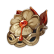
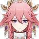
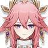

Joven promesa y actual lidel del clan Kamisato de la Comision Yashiro. Refinado y educado, siempre tiene forma de solucionar las cosas.
Artefacto/s recomendados



Atq%

Bono Hydro

Daño / prob critica
Daño/prob critica > Atq% > Energia%
Talentos
Pasivas
Constelacion
Armas Recomendadas


Personajes compatibles


 
